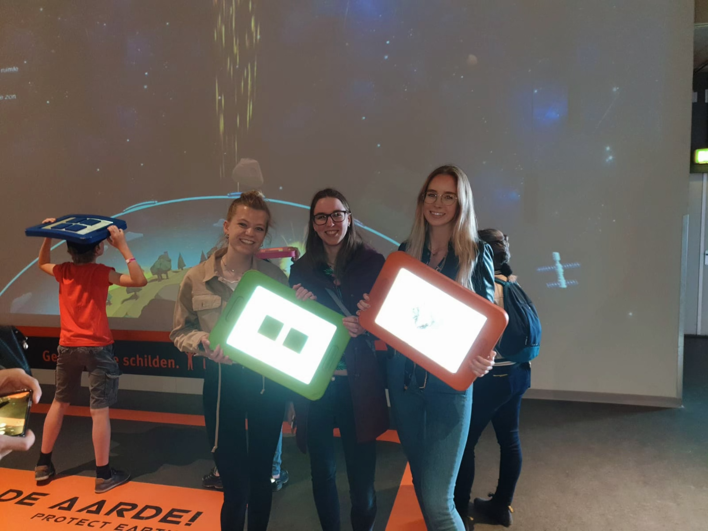
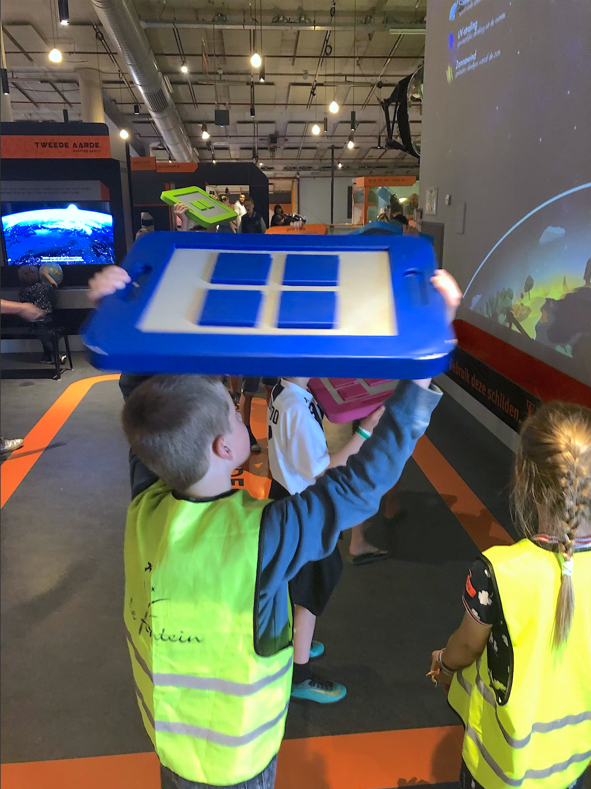

NEMO is a museum for children where to can explore science and technologies in a fun way. The museum has an exhibition called ‘Life in the universe’ where my chosen installation can be found. The exhibition will take kids to a discovery within the universe.
I want to thank the teachers for sharing their prize money (they’ve won last year’s Olive Award!) with us so we can do a field trip all together.
Playing save the worldProve: I've been there!
Installation: Protect the world
The installation I chose, is a playful interface. The users need to take place in the platform on the floor and have to use a coloured board. To play the game you have to pay attention to the screen. The screen shows half of the globe in a part of the universe with meteorites, cosmets, UV radiation, solar wind, stars, the world with grass and trees and the atmosphere with used boards on it. With the coloured board users have to stop meteorites and comets by walking and moving quickly before the objects hit the ozon. When a meteorite lands on your plate on the projection, this meteorite will be destroyed and it will not go through the ozone layer. In that way the children can ‘protect the world’. The users see their boards on a screen because of a used projector, so they know where their boards are positioned. On the ground, the orange marks are indicated on where you have to stand, the projection wants to be able to see you and you want to be able to participate in the game.
Users playing save the world
Technology behind it
The technology used is an infra-red sensor which reflect on the board the people are holding. These boards contain certain material on the surface, so that infrared is reflected and motion is detected. On the boards are a different number of rectangles, which will not be reflected in the camera (see the picture below). The system knows because of the different number of rectangles what board the users are holding and on what position the people are. The game is projected on a screen.
Reflecting boardUsed sensors
Reflection
I have seen various installations during the excursion. This installation was occupied all the time, so it shows that this is a good and fun concept. It is interesting to see how people use this installation and how this is shown on the projector. It is simple and accessible and can be used by everyone. I found it interesting to see that such companies use these tools to give an extra dimension to the user experience. A great addition for this excursion will be a presentation given by an creater or worker of NEMO to provide us from more information about how they came up with this idea and the technology behind it.